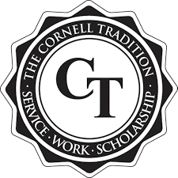
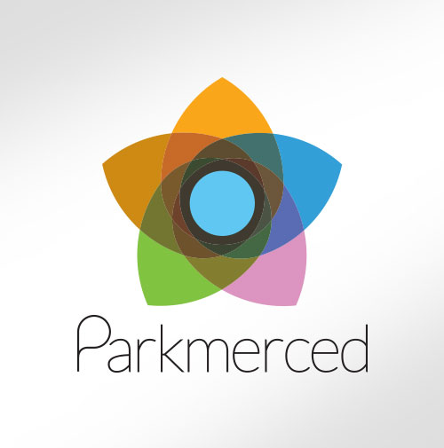
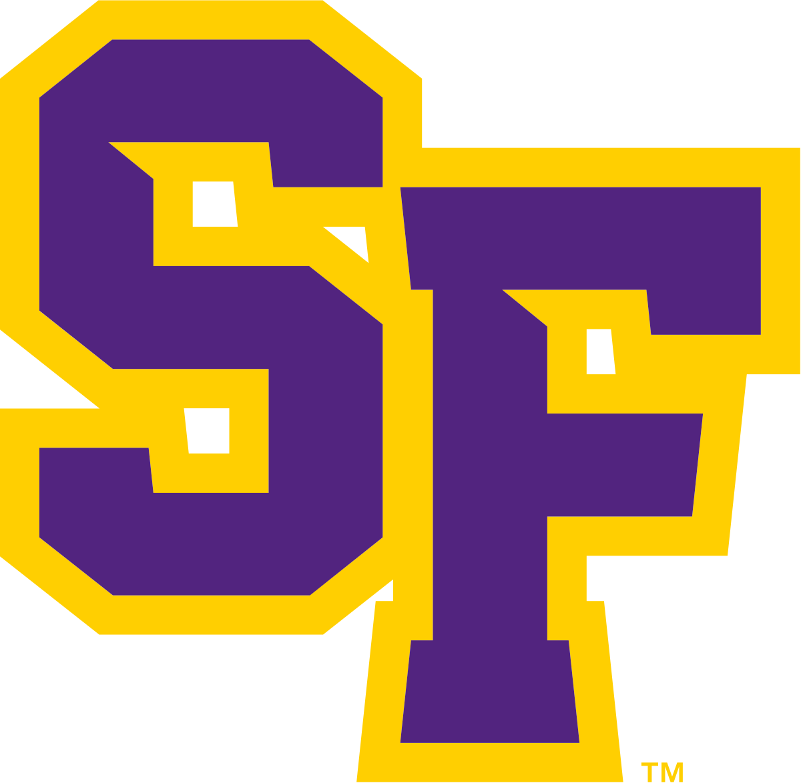

Awards
Perry World House Graduate Fellowship, 2021
Perry World House ProfileSelected to be among 26 from 200+ applicants at Penn to investigate the national security implications of quantum technologies.
The Dean's Fellowship, 2021
Dean's FellowshipSelected among hundreds to receive $50,000/year for tuition and living expenses over 5 years of my doctoral studies.
Computational Chemistry and Materials Science Summer Fellowship, 2021
CCMS FellowshipSelected among hundreds based on proposed work for spin-based quantum sensors (declined).

Cornell Engineering Learning Initiative Research Fellowship, 2017
ELI FellowshipAwarded $1,850 through competitive proposal review process to develop solid-state electrolyte batteries. Funded by Boeing, work conducted at Cornell.

The Cornell Tradition Fellowship, 2017
The Cornell TraditionAwarded competitive $2,000 fellowship for my commitement to public service.

Summer Undergraduate Research Fellowship (SURF), 2017
SURF ProgramProposal selected from competitive-review process to develop 3D microbatteries for heart transplants at Caltech.

Robert L. Pender Memorial Scholarship, 2016
Parkmered News MentionSingle awardee among 100+ applicants for a $1,000 award for my research on solid-state batteries.
Semi-Finalist for the SMART Scholarship, 2016
SMART ScholarshipSelected to be a semi-finalist for the SMART undergraduate scholarship for work in the Army Research Laboratory.
